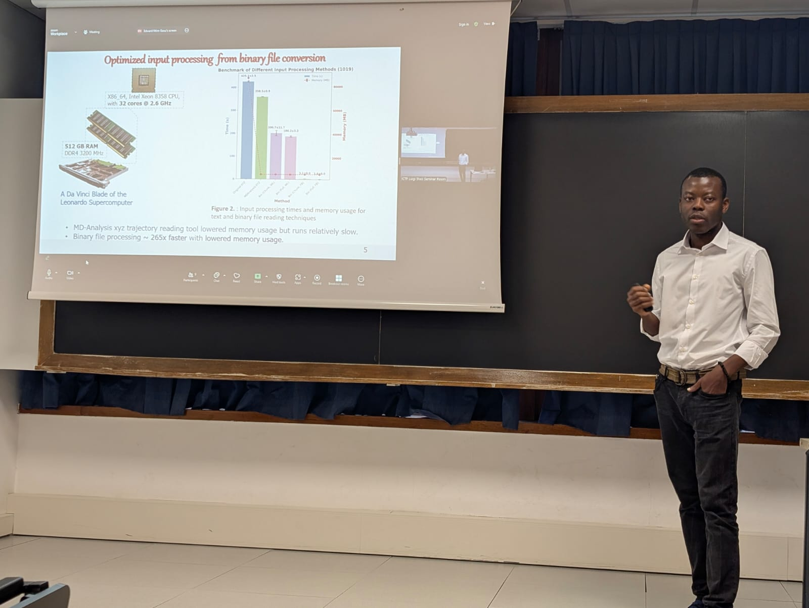
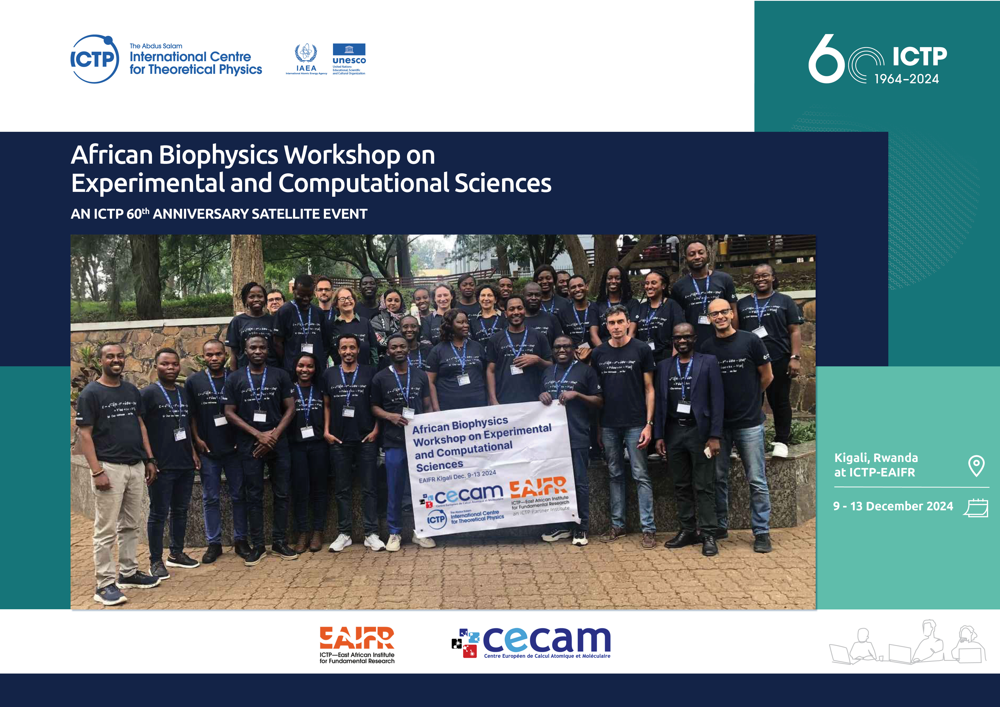
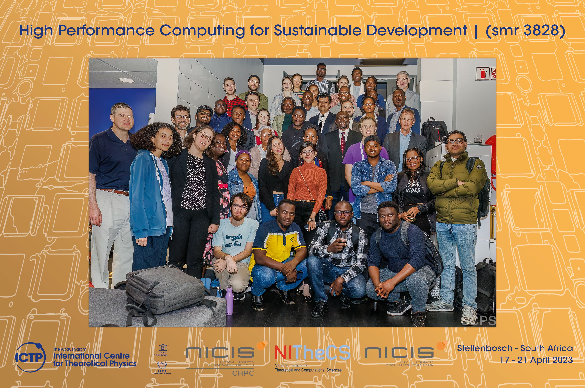

News and Updates

Published on: January 07, 2025
Chemistry and Physics have evolved in recent times amidst growing global challenges. Breakthroughs in both subjects arguably relied on theory and experiments. Both experiment and theory are clients of scientific computing. As data grows exponentially in both areas, performing calculations on large datasets become a challenge. During my thesis work, I contributed to feature modification of the Python-based analysis pipeline used to automatically detect how water molecules re-orient themselves under dynamic conditions. In a nutshell, I leveraged binary input processing, multiprocessing, and data-parallelism approaches in Python to achieve substantial performance gains. This (Thesis Publication), together with results from my coursework, led to the award of the title of "Master in High Performance Computing". My journey was quadratically strenuous, as any worthwhile endeavor may demand. The mentorship, support, and encouragement of Professors Ivan Girotto, Ali Hassanali, and Natalia Manko were crucial to my successful completion.

Published on: December 19, 2024
I had the rare opportunity to participate in the CECAM & ICTP-EAIFR sponsored Workshop on Experimental and Computational Biophysics. I was exposed to recent advances in experimental methods such as atomic-force microscopy and structural biology, as well as computational approaches within the common theme of drug design and drug delivery. I also learnt valuable soft-skills for scientific and economic engagements. The structure of the meetings made it possible to interact with the speakers and participants at length. Kigali was fantastic, from the airport to the hotel, and across the beautiful landscape to the East African Institute for Fundamental Research (ICTP-EAIFR). Social hangouts with other participants from countries like Ethiopia, Cameroon, and the Democratic Republic of Congo gave me a richer taste of African culture.

Published on: September 1, 2024
I had an exhilarating opportunity to dive into the world of high-performance computing (HPC) and its groundbreaking role in advancing the United Nations Sustainable Development Goals (SDGs). At Stellenbosch University, we explored how HPC is revolutionizing efforts towards "Good Health and Well-Being" (SDG 3). The potential of HPC to drive precision medicine and innovative solutions promises to pave the way for significant advancements in global health.